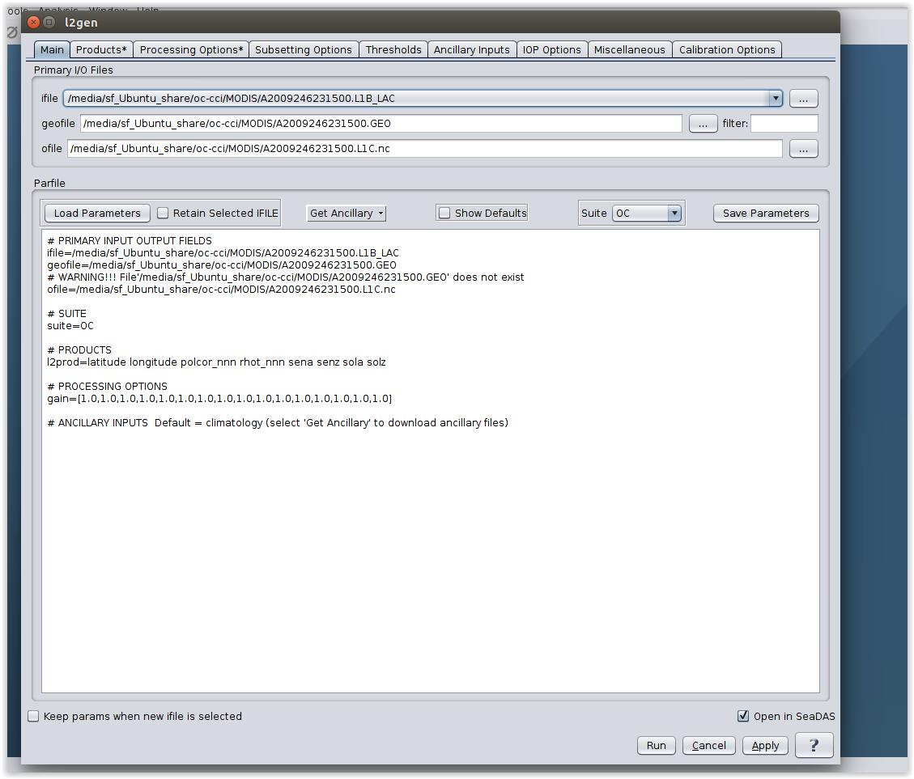

| C2RCC Processor |
|
MODIS L1C data is not a standard format. It has been defined in the the frame of ESA OC-CCI project. It contains all the data required by the
processor,
the more accurate geo-location and also the sun and view angles.
The data can be generated with l2gen of SeaDAS (
).

Configure l2gen via the GUI
l2gen ifile=<inputFilePath> geofile=<gelocationFilePath> ofile=<outputFilePath>.L1C.nc
gain=1.0,1.0,1.0,1.0,1.0,1.0,1.0,1.0,1.0,1.0,1.0,1.0,1.0,1.0,1.0,1.0
l2prod="rhot_nnn polcor_nnn sena senz sola solz latitude longitude"